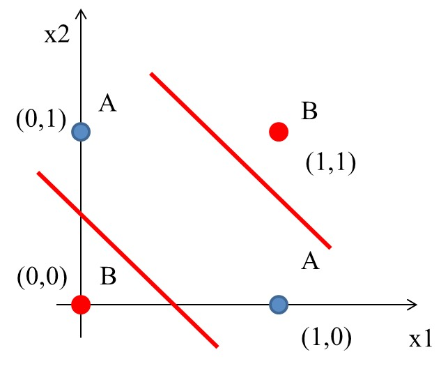
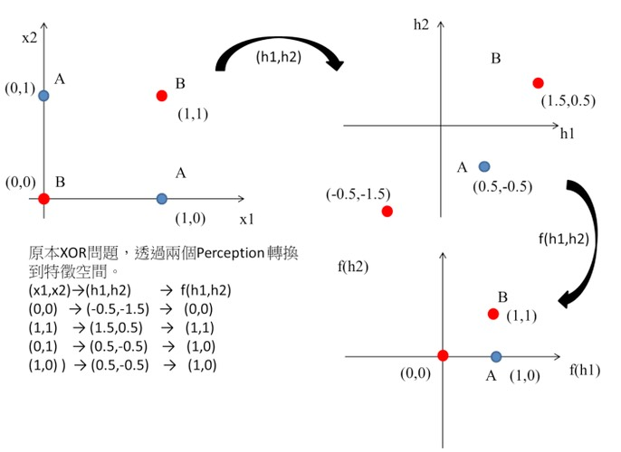

感知器
Table of Contents

1. 感知器(Perception)
1.1. 何謂感知器
Perceptron is a single layer neural network and a multi-layer perceptron is called Neural Networks(神經網路).
收到多個輸入訊號之後，再當作一個訊號輸出，如圖1所示，\(x_1, x_2\)為輸入訊號，\(y\)為輸出訊號，\(w_1, w_2\)代表權重(weight)，圖中的圓圈稱為「神經元」或稱作「節點」。神經元\(x_1, x_2\)的訊號是否會觸發神經元\(y\)使其輸出訊號則取決於\(w_1x_1+w_2x_2\)是否會超過某個臨界值\(\theta\)。

Figure 1: 收到兩組輸入訊號的感知器
若以算式表示此一觸發條件則如公式\eqref{orgcacb522}所示。
\begin{equation} \label{orgcacb522} y = \begin{cases} 0, & \text w_1x_1+w_2x_2 \leq 0 \\ 1, & \text w_1x_1 + w_2x_2 > 0 \end{cases} \end{equation}1.2. 感知器工作原理
1.2.1. Version #1: 使用weight
感知器(perceptron)是人造神經元(artificial neuron)的一種，也是最基本的一種。它接受一些輸入，產生一個輸出。

Figure 2: Perceptron version 1
- 這種架構的輸入/輸出關係為線性
- 神經網路中再多的線性perceptron叠加，仍為線性
- 無法解決 線性不可分 的問題
線性可分 v.s. 線性不可分

低維映射至高維
可以透過一個非線性的映射將低維空間線性不可分的樣本轉換至高維空間，使其成為線性可分2，例如:

Figure 4: Kernal function mapping
1.2.2. Version #2: 加入bias

Figure 5: Perceptron version 2
- 不加 bias 你的分類線(面)就必須過原點，這顯然是不靈活的
- 透過bias，可以將NN進行左右調整，以適應(fit)更多情況
- 可以將bias視為一個activate perceptron的threshold
- bias也可以視為當輸入均為0時的輸出值
- 從仿生學的角度，刺激生物神經元使它興奮需要刺激強度超過一定的閾值，同樣神經元模型也仿照這點設置了bias
1.2.3. Version #3: 加入activation function
加入activation function，至為什麼要加這個，請直接看下一節的Story of gate。

Figure 6: Perceptron version 3
1.3. 能做什麼
目前為止，感知器看起來就是個函數，有輸入、有處理、有輸出，這和AI有什麼關係呢？感知器能解決什麼問題？
2. Story of gate: From perceptron to MLP
2.1. OR gate實作
圖7中有四筆資料，有三個A、一個B，如何進行分類?
Figure 7: 分類任務:問題
2.1.1. 想法
最簡單的分類方式是在A和B中間直接找條直線(\(w_1x_1+w_2x_2+b=0\))就可以將A和B完整切出兩個區塊，然後再搭配階梯函數(step function)將>0與<=0分別設為1與0，用來代表類別0與1。該直線方程式如下：
\begin{equation} \label{org77c0652} y = \begin{cases} 1, & w_1x_1 + w_2x_2-b>0 \\ 0, & w_1x_1 + w_2x_2-b\leq0 \\ \end{cases} \end{equation}2.1.2. Solution
經過無數的嚐試錯誤，也許我們可以矇到一個如下的方程式

Figure 8: 分類任務:Solution
如果畫成Perceptron(version 3)的圖:

Figure 9: Perceptron presentation
如果將圖8的四點點代入y(方程式\eqref{org77c0652}):
\begin{align*} A(0,1) \rightarrow y &= f(0,1) = f(1\times0+1\times1-0.5) = f(0.5) = 1 \\ A(1,0) \rightarrow y &= f(1,0) = f(1\times1+1\times0–0.5) = f(0.5) = 1\\ A(1,1) \rightarrow y &= f(1,1) = f(1\times1+1\times1–0.5) = f(1.5) = 1\\ B(0,0) \rightarrow y &= f(0,0) = f(1\times0+1\times0–0.5) = f(-0.5) = 0\\ \end{align*}2.1.3. OR gate
2.1.4. Python實作
上述 OR gate的python實作如下
1: import numpy as np 2: 3: def step_function(x): 4: return np.array(x>0, int) 5: 6: def OR(x1, x2): 7: x = np.array([x1, x2]) 8: w = np.array([1, 1]) 9: b = -0.5 10: theta = 0 11: y = np.sum(w*x) + b 12: return step_function(y) 13: 14: print("0 OR 0 -> ", OR(0,0)) 15: print("0 OR 1 -> ", OR(0,1)) 16: print("1 OR 0 -> ", OR(1,0)) 17: print("1 OR 1 -> ", OR(1,1))
0 OR 0 -> 0 0 OR 1 -> 1 1 OR 0 -> 1 1 OR 1 -> 1
2.2. [課堂作業]AND、NAND Gate實作 TNFSH
上述範例中，我們以瞎貓精神找出了一組solution解決了OR gate的分類問題，請比照辦理，以Python實作出以下兩個gate: AND, NAND。
2.2.1. AND
已知AND gate真值表如下
| A | B | A AND B |
|---|---|---|
| 0 | 0 | 0 |
| 0 | 1 | 0 |
| 1 | 0 | 0 |
| 1 | 1 | 1 |
2.2.2. NAND
已知NAND gate真值表如下
| A | B | A NAND B |
|---|---|---|
| 0 | 0 | 1 |
| 0 | 1 | 1 |
| 1 | 0 | 1 |
| 1 | 1 | 0 |
3. 單層感知器的極限與多層感知器: XOR gate
XOR(互斥或)真值表如下:
| A | B | A XOR B |
|---|---|---|
| 0 | 0 | 0 |
| 0 | 1 | 1 |
| 1 | 0 | 1 |
| 1 | 1 | 0 |
其輸入/輸出分佈圖為

Figure 11: XOR Gate
到目前為止，透過權重及偏權值可以設計 AND、NAND、OR, 但無法完成 XOR。顯然，若要再以感知器來模擬其運作原理，單層感知器已不敷使用。
3.1. 想法
這個時候一般線性的分類就沒有辦法很完美分割(如下圖)，所以就需要一些變形的方法來達到目的。

Figure 12: XOR Gate Solution ideas
即便一個人再如何bumbler，仍有可能提出一些明智的話語：

Figure 13: 一佪便當吃不夠可以吃兩個
所以，一條線無法分割，那就用兩條啊啊啊~~~
由XOR的電路實作(如圖14)我們也可以發現同樣的原理。

Figure 14: XOR 還輯閘的組合
3.2. 多層感知器(MLP): XOR gate 實作

3.2.1. Solution

Figure 16: XOR Gate Solution: (1)
如前所述，一條線為一個perceptron，這裡會用到兩個
- \(h_1(x) = x_1 + x_2 - 0.5\)
- \(h_2(x) = x_1 + x_2 - 1.5\)

Figure 17: XOR Gate Solution: (2)
將圖12的4個點代入\(h_1\):
\begin{align*} h_1(0,0) &= f(1\times0+1\times0–0.5) = f(-0.5) = 0\\ h_1(0,1) &= f(1\times0+1\times1-0.5) = f(0.5) = 1\\ h_1(1,0) &= f(1\times1+1\times0–0.5) = f(0.5) = 1\\ h_1(1,1) &= f(1\times1+1\times1–0.5) = f(1.5) = 1\\ \end{align*}將圖12的4個點代入\(h_2\):
\begin{align*} h_2(0,0) &= f(1\times0+1\times0–1.5) = f(-1.5) = 0\\ h_2(0,1) &= f(1\times0+1\times1-1.5) = f(-0.5) = 0\\ h_2(1,0) &= f(1\times1+1\times0–1.5) = f(-0.5) = 0\\ h_2(1,1) &= f(1\times1+1\times1–1.5) = f(0.5) = 1\\ \end{align*}由上可知:
- (0, 0)
- (0, 0)帶入第1個perceptron \(h_1(0,0)\)輸出-0.5
- (0, 0)帶入第2個perceptron \(h_2(0,0)\)輸出-1.5
- (-0.5, -1.5)再經由step function轉換輸出(0,0)
- (0, 1)
- (0, 1)帶入第1個perceptron \(h_1(0,1)\)輸出0.5
- (0, 1)帶入第2個perceptron \(h_2(0,1)\)輸出-0.5
- (0.5, -0.5)再經由step function轉換輸出(1,0)
- (1, 0)
- (1, 0)帶入第1個perceptron \(h_1(1,0)\)輸出0.5
- (1, 0)帶入第2個perceptron \(h_2(1,0)\)輸出-0.5
- (0.5, -0.5)再經由step function轉換輸出(1,0)
- (1, 1)
- (1, 1)帶入第1個perceptron \(h_1(1,1)\)輸出1.5
- (1, 1)帶入第2個perceptron \(h_2(1,1)\)輸出0.5
- (1.5, 0.5)再經由step function轉換輸出(1,1)
即
\begin{align*} data(0,0) &= f(h_1,h_2) = (0,0) \\ data(0,1) &= f(h_1,h_2) = (1,0) \\ data(1,0) &= f(h_1,h_2) = (1,0) \\ data(1,1) &= f(h_1,h_2) = (1,1) \\ \end{align*}這相當於透過兩個perceptron將原本的輸入做特徵空間轉換，如圖18:

Figure 18: XOR Gate Solution: (3)
這個時候只要設計一個線性分類器就可以完美分割兩類的資料了阿，如圖19:

Figure 19: XOR Gate Solution: (4)
XOR問題的神經網路結構如下圖:

Figure 20: XOR Gate Solution: (5)
至於其實作程式碼則如下。
1: #python code for XOR gate simulation 2: import numpy as np 3: 4: def AND(x1, x2): 5: x = np.array([x1, x2]) 6: w = np.array([0.5, 0.5]) 7: b = -0.7 8: theta = 0 9: tmp = np.sum(w*x) + b 10: if tmp <= theta: 11: return 0 12: else: 13: return 1 14: 15: def OR(x1, x2): 16: x = np.array([x1, x2]) 17: w = np.array([0.5, 0.5]) 18: b = -0.2 19: theta = 0 20: tmp = np.sum(w*x) + b 21: if tmp <= theta: 22: return 0 23: else: 24: return 1 25: 26: def NAND(x1, x2): 27: x = np.array([x1, x2]) 28: w = np.array([-0.5, -0.5]) 29: b = 0.7 30: tmp = np.sum(w*x) + b 31: if tmp <= 0: 32: return 0 33: else: 34: return 1 35: 36: def XOR(x1, x2): 37: s1 = NAND(x1, x2) 38: s2 = OR(x1, x2) 39: y = AND(s1, s2) 40: return y 41: 42: print("XOR(0,0): ", XOR(0,0)) 43: print("XOR(0,1): ", XOR(0,1)) 44: print("XOR(1,0): ", XOR(1,0)) 45: print("XOR(1,1): ", XOR(1,1))
XOR(0,0): 0 XOR(0,1): 1 XOR(1,0): 1 XOR(1,1): 0